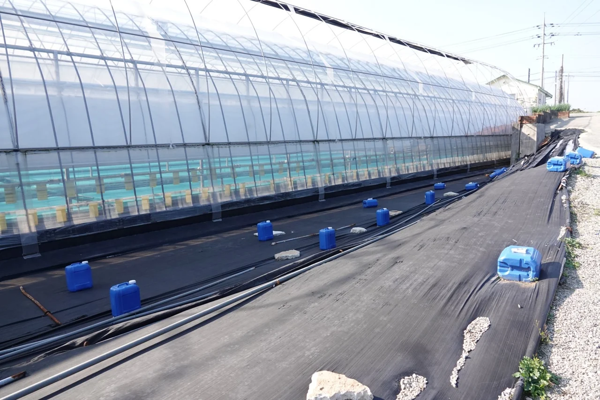

2027 노지고추 파종·육묘｜아주심기 날짜에서 70~80일 거꾸로

육묘시설 외부 위생·방초 관리 참고 사진. 특정 고추 육묘 농장의 2027년 현황을 나타내지 않습니다.
노지고추는 밭에 아주심을 시기부터 정하고 육묘 기간을 거슬러 파종일을 잡습니다. 겨울에 일찍 파종한다고 항상 유리한 것은 아닙니다. 지역의 늦서리와 육묘 시설의 야간 보온 능력을 함께 봐야 합니다.
노지와 시설 작형의 육묘 기간을 구분하세요
농사로 보통재배 자료는 노지 육묘 70~80일, 반촉성 80~90일, 억제재배 50~60일 등 작형별 차이를 제시합니다. 남부와 중부의 통상 파종·정식 시기도 다릅니다. 전국 날짜를 하나로 고정하지 말고 지역 농업기술센터의 해당 연도 기상·품종 안내로 조정하세요.
5월 5일 아주심기를 가정하면
2027년 5월 5일에서 80일 전은 2월 14일, 70일 전은 2월 24일입니다. 따라서 예시 파종 검토 구간은 2월 14~24일입니다. 이 날짜는 지역 권장일이 아닌 역산 예시입니다. 정식이 늦춰지면 모가 오래 머무를 공간과 관리도 필요합니다. 달력상의 나이와 실제 본잎·뿌리 상태를 함께 판단해야 합니다.
| 단계 | 결정·점검 | 내 기록 |
|---|---|---|
| 정식 계획 | 지역 늦서리·토양·작형 | 예정 ___월 ___일 |
| 역산 | 노지 70~80일 기준 검토 | 파종 검토 ___~___ |
| 육묘 중 | 야간 온도·관수·환기·뿌리 | 매일 관찰 ___ |
| 반입·이동 | 해충·병징·묘 균일도 | 구입처·품종·로트 |
온도와 관수는 모의 높이에서 확인합니다
공식 자료는 육묘 낮 22~30℃, 밤 15℃ 이상 관리와 오전 관수를 안내합니다. 난방기 설정값만 보지 말고 모가 있는 위치의 온도와 가장자리 냉기를 확인하세요. 품종·육묘 단계와 시설 조건에 따라 관리가 달라질 수 있습니다. 과습과 밀식, 환기 부족을 피하고 긴 웃자람이나 뿌리 이상을 관찰합니다.
작은 해충을 반입 단계부터 관찰합니다
2026년 경북농업기술원 안내는 육묘기 총채벌레·진딧물 관리와 잡초 제거, 끈끈이트랩 활용을 강조합니다. 모를 들일 때와 정기 관찰 때 잎 뒷면·생장점을 살피고 의심 모는 별도로 확인하세요. 약제는 작물·대상 해충에 등록된 제품의 최신 표시사항과 안전사용기준을 확인해야 하며, 날짜만 정해 일괄 살포하는 방식으로 이 글을 사용하지 마세요.
작업 전 점검표
- 노지재배 기준으로 일정을 계산했다
- 야간 보온과 정전 대응을 확인했다
- 묘 구입일·품종과 해충 관찰 기록을 남긴다
파종을 앞당기기 전에 난방·공간·정식 예정일이 함께 감당되는지 확인하세요.